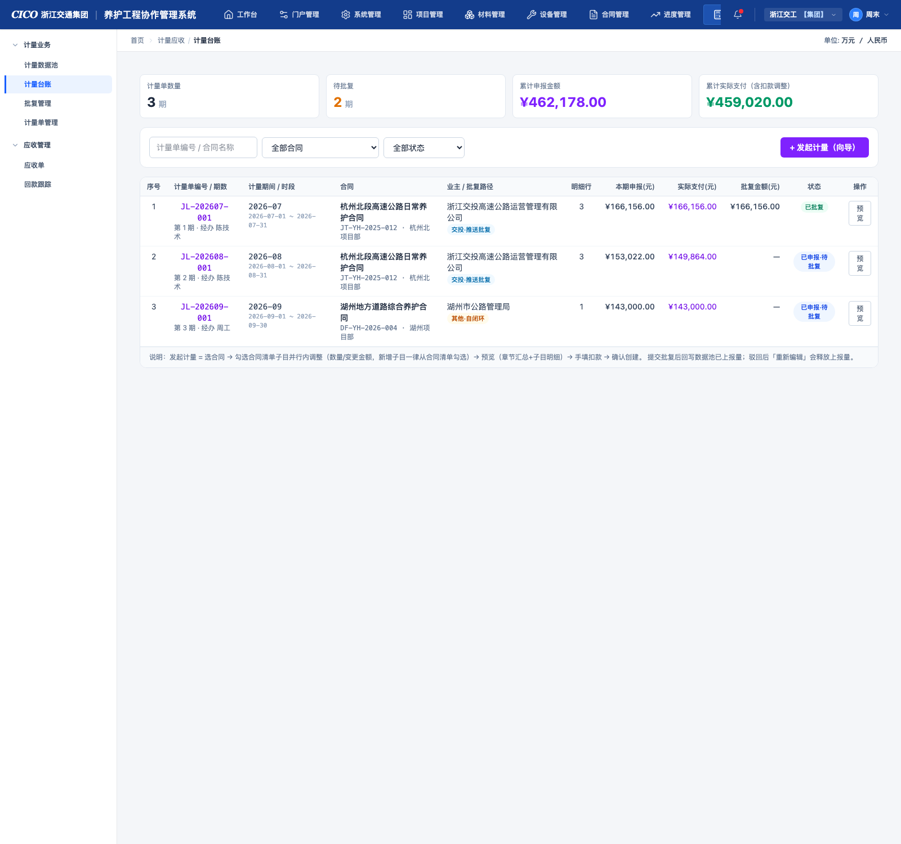
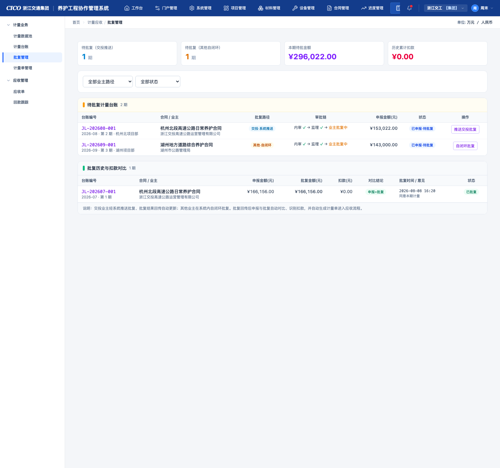
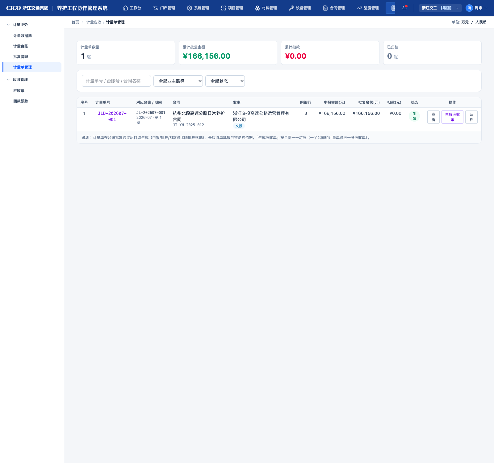
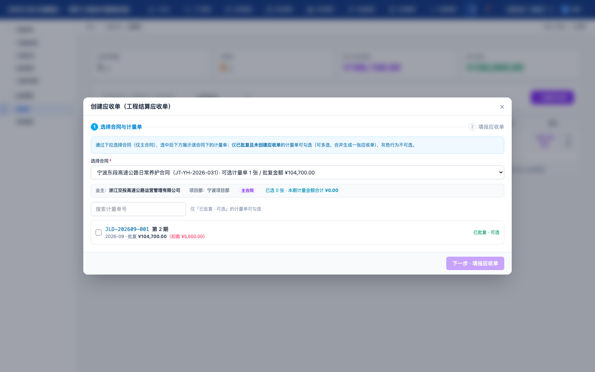
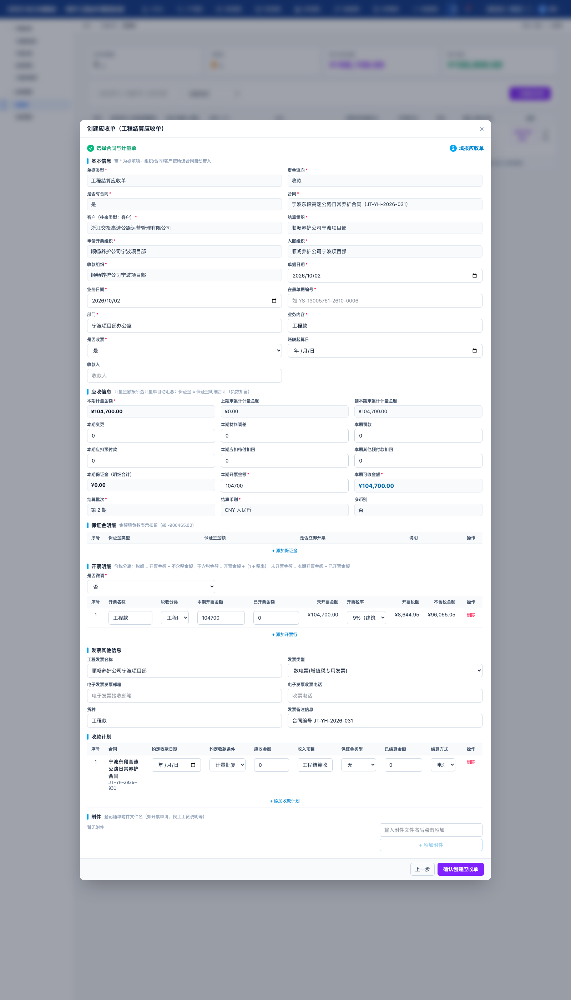

计量应收模块是养护工程项目管理平台的核心收支闭环模块，覆盖「产值 → 计量 → 批复 → 应收 → 回款」全链路：以收入合同的工程量清单为基础形成计量数据池，按计量期发起计量并生成计量单（台账），经交投系统推送批复或系统内自闭环批复后自动生成计量凭证（计量单管理），再按合同一一对应生成应收单并推送交投财务共享，最终在回款跟踪中登记回款、形成计量—回款对比台账。
| 分组 | 页面 | 路由 | 一句话说明 |
|---|---|---|---|
| 计量业务 | 计量数据池 | /measure/pool | 按「主合同 / 协同合同」双页签归类的可计量工程量总库，协同量推送、发起计量的入口 |
| 计量台账 | /measure/statement | 计量单（按合同+期间）的创建、提交批复、预览报表 | |
| 批复管理 | /measure/approval | 交投推送批复 / 其他业主自闭环批复，扣款对比 | |
| 计量单管理 | /measure/order | 批复后自动生成的计量凭证，生成应收单的依据 | |
| 应收管理 | 应收单 | /measure/receivable | 按合同 1:1 生成，推送交投财务共享并确认 |
| 回款跟踪 | /measure/payment | 登记回款（多笔部分回款），计量—回款对比台账 |
| 角色 | 职责与常用操作 |
|---|---|
| 经办技术员（默认「陈技术」） | 维护数据池子目、发起计量、编辑计量单、提交批复 |
| 计量/合同管理员 | 临时/合同外子目「转入正式」、批复操作（交投回传 / 自闭环）、计量单归档 |
| 财务人员 | 生成应收单、推送财务共享、确认、登记回款 |
reportedQty（已上报量），驳回/重新编辑会释放；② 批复通过即回写 approvedQty（已批复量）并自动生成计量凭证；③ 应收金额 = 计量凭证批复金额（含税）；④ 仅「财务共享已确认」的应收单可登记回款。| 口径 | 公式 / 定义 | 说明 |
|---|---|---|
| 本组织完成量 | ownQty = logQty + manualQty + transferInQty | 本组织自行完成：施工日志报工 + 手动计入产值 + 临时转入 |
| 协同单位完成量 | coopQty | 主合同子目由关联协同合同「推送主合同」自动累计的量（只读，不可直接编辑） |
| 已施工量 | builtQty = ownQty + coopQty | 已施工 = 本组织完成 + 协同单位完成 |
| 可计量（资格） | canMeasure = (listType='formal') && (contractAttr='in') | 仅「正式 · 合同内」子目参与计量；临时/合同外需先「转入正式」 |
| 未上报计量量 | unreportedQty = builtQty − reportedQty | 可申报计量的余量；发起计量添加子目默认带入该值（= 所有已施工且未申报数量） |
| 计量行来源拆分 | ownUnreportedQty / coopUnreportedQty | 未上报计量量按来源拆分为「本组织 / 协同单位」两部分（历史申报优先消耗本组织量），计量行据此快照 ownQty / coopQty 构成 |
| 未推送量（协同） | unpushedQty = ownQty − pushedQty | 协同合同子目可推送至主合同的量（协同页签口径） |
| 未批复计量量 | unapprovedQty = reportedQty − approvedQty | 已上报待批复的量 |
| 实际支付金额 | netPayable = 本期完成合计 + Σ增加项 − Σ扣减项 | 扣款/调整项见 4.1 计量单预览 |
| 章节 | chapterOf(code) = 子目号数字前缀 | 302-1-a → 章节 302；100 总则 / 200 路基 / 300 路面 / … |
| 交互点 | 行为说明 |
|---|---|
| 「主合同 / 协同合同」Tab | 顶部页签切换合同列表：主合同页签仅展示当前单位为主要单位的合同，协同合同页签仅展示当前单位为协同单位的合同；切换后汇总卡、筛选区、清单整体联动；支持 ?tab=coop URL 参数直达协同页签 |
| 顶部汇总卡（主合同页签） | 可计量合同（份）/ 可计量子目（项）/ 未上报计量量价值（含协同完成）/ 未批复计量量价值，随筛选实时联动 |
| 顶部汇总卡（协同页签） | 协同合同（份）/ 协同子目（项）/ 未推送量价值 / 累计已推送价值 |
| 筛选区 | ① 子目号/名称关键字；② 合同下拉（当前页签范围合同）；③「仅看有未计量量」勾选；④ 主合同页签：「⇄ 转入正式」「转入记录」；协同页签：「仅看有未推送量」「推送记录」 |
| 「展开清单 / 收起清单」 | 切换该合同下章节层级子目清单的显示；默认全部收起，状态互相独立 |
| 「发起计量」（仅主合同行） | 打开发起计量向导弹窗（见 4.1.1），预选该合同、直接进入 Step2；协同合同行不提供发起计量入口 |
| 章节层级行 | 按 100/200/300… 章节分组，显示该章子目数、合同价、未上报价值（主合同页签） |
| 子目行「维护」 | 打开子目编辑弹窗（字段见下表）；「删」需确认，存在已施工量时二次确认；主合同子目的「协同单位完成」由协同推送自动累计，编辑弹窗中只读展示不可修改 |
| 「⇄ 转入正式」（主合同页签） | 弹窗选择源子目（临时/合同外）与目标子目（正式·合同内）、数量（≤ 已施工量−已转出）、经办人；确认后计入目标子目 transferInQty 并记录日志 |
| 「推送到主合同」（协同页签） | 子目行按钮（未推送量 ≤ 0 时置灰）：弹窗展示源子目信息（已完工/已推送/未推送/关联主合同）→ 选择关联主合同下可计量（正式·合同内）子目为目标（同子目号前缀 ★ 默认选中，显示目标「已含协同完成 X」）→ 填写推送数量（默认 = 未推送量，≤ 未推送量）与经办人 → 确认后：源子目 pushedQty 累计、目标子目 coopQty 累计，并写入推送记录 |
| 「推送记录」（协同页签） | 弹窗按时间倒序展示推送日志：时间 / 协同合同 / 源子目 → 主合同目标子目 / 推送量 / 经办人 |
| 字段 | 说明 |
|---|---|
| 合同行（主合同页签） | 合同名称、合同编号 · 项目 · 业主（交投·推送批复 / 其他·自闭环）；头部紫色「主合同」徽章；存在协同单位完成量时显示「含协同单位完成 ¥xx」；存在协同单位时展示协同单位名称 |
| 合同行（协同页签） | 合同名称、合同编号 · 项目 · 业主；青蓝色「协同合同」徽章 + 主要单位名称 + 关联主合同编号（可定位主合同） |
| 可计量子目 | 该合同可计量（正式·合同内）子目数，单位：项（主合同页签） |
| 可申报计量金额 | Σ（未上报计量量 × 综合单价），即未上报价值（含协同单位完成部分） |
| 历史已申报计量 | Σ（已上报量 × 单价），该合同累计已申报金额 |
| 有批复计量 | Σ（已批复量 × 单价），该合同累计已批复金额 |
| 协同子目 / 未推送量价值 / 已推送价值 | 协同合同行三指标：协同子目数 / Σ（未推送量 × 单价）/ Σ（已推送量 × 单价） |
| 子目号 / 子目名称 | 子目号如 302-1-a（安全生产费子目带青色标签）；名称下展示单位与综合单价 |
| 子目总量 | 合同清单数量（totalQty） |
| 本组织完成 | ownQty = 报工 + 手动 + 转入，下附构成「报工 X / 手动 Y / 转入 Z」小字（主合同页签与协同页签均按此口径） |
| 协同单位完成 | 主合同子目的 coopQty（协同合同推送累计），> 0 时青色高亮并附「协同合同推送」小字；协同合同页签不展示此列 |
| 已上报 / 未上报计量量 | reportedQty / unreportedQty（橙色加粗，无余量置灰）；主合同页签的未上报计量量 =（本组织完成 + 协同单位完成）− 已上报 |
| 已批复 / 未批复 | approvedQty / unapprovedQty（琥珀色），主合同页签 |
| 已推送主合同 / 未推送量 | 协同页签子目列：pushedQty（绿色，累计已推送到主合同的量）/ unpushedQty（青色，= 本组织完成 − 已推送，可推送余量） |
| 完成批次（时间段） | 批次数 + 最近批次日期与数量（供向导按时间段筛选完成量） |
三步流程：Step1 选择合同 → Step2 选择并调整子目 → Step3 预览与确认。从合同行进入时跳过 Step1。仅主合同可发起计量（Step1 合同列表只展示主合同，顶部青色提示条：「仅主合同可发起计量；协同合同请在『计量数据池·协同合同』页签推送主合同后，由主合同统一计量」）。
| 步骤 | 交互说明 |
|---|---|
| Step1 选择合同 | 主合同卡片单选（带紫色「主合同」徽章 + 含协同完成金额），卡片显示各合同可计量子目数与未上报价值（含协同）；选中后「下一步」 |
| Step2 选择并调整子目 |
① 顶部设置计量时间段（起/止日期 + 本月快捷，仅作报表口径，不自动重算数量）；|
| Step3 预览与确认 | 计量支付报表预览（图一章节汇总 + 扣款项可手填 + 图二明细只读，明细行显示本组织/协同单位构成）→「确认创建」生成草稿（JL-YYYYMM-NNN，自动期数） |
计量单（按合同 + 期间）的全生命周期管理：新建（向导）、编辑草稿、提交批复、重新编辑（驳回后）、预览报表、删除草稿。

| 交互点 | 行为说明 |
|---|---|
| 「+ 发起计量（向导）」 | 打开 3 步创建向导（见 4.1.1） |
| 「编辑」（草稿） | 重新打开向导（Step2 起，可回退调整）；非草稿点击会提示「仅草稿状态可编辑」 |
| 「提交批复」（草稿） | 校验通过后：状态 → submitted，回写数据池已上报量；toast「数据池已上报量已回写」 |
| 「重新编辑」（已驳回） | 状态 → draft，释放数据池上报量，修改后可重新提交 |
| 「预览」/ 点击编号 | 打开计量单预览弹窗（见 4.1.2）；预览弹窗底部草稿状态可直接「提交批复」 |
| 「删」（草稿） | 确认后删除，仅草稿状态可删 |
| 列 | 说明 |
|---|---|
| 计量单编号 / 期数 | JL-202608-001；第 N 期 · 经办人 |
| 计量期间 / 时段 | YYYY-MM 期间；起止日期（periodStart ~ periodEnd） |
| 合同 | 合同名称 + 编号 · 项目 |
| 业主 / 批复路径 | 业主名 + 标签（交投·推送批复 / 其他·自闭环） |
| 明细行 / 本期申报 | 子目行数；totalAmount（其中安全生产费单列） |
| 实际支付(元) | netPayableOf：本期完成合计 + 增加项 − 扣减项 |
| 批复金额(元) | approvedAmount；下方红字显示扣款（申报−批复） |
| 状态 | 草稿 / 已申报·待批复 / 批复中(交投) / 已批复 / 已驳回 |
汇总卡：计量单数量（期）· 待批复（submitted+approving）· 累计申报金额 · 累计实际支付（含扣款调整）。

| 交互点 | 行为说明 |
|---|---|
| 「推送交投批复」 (交投 · submitted) | 推送交投养护管理平台，状态 → approving（批复中），等待结果回传 |
| 「批复回传」 (交投 · approving) | 弹窗「交投批复结果回传」：默认批复金额=实际支付金额；确认后 approved，自动生成扣款对比与计量凭证 |
| 「自闭环批复」 (其他 · submitted) | 弹窗「自闭环批复」：可「批复通过」（金额可调整）或「驳回」（原因必填）；通过后自动生成计量凭证，驳回则释放数据池上报量、状态 → rejected |
| 字段 | 必填 | 说明 |
|---|---|---|
| 申报摘要（只读） | — | 申报台账编号、合同/期间/期数、本期申报金额、明细行数（含安全生产费金额） |
| 批复金额(元) | 是 | 默认 netPayableOf；≤ 申报金额，差额实时提示「将识别扣款：XX」 |
| 批复意见 / 扣款说明 | 否 | 如「现场复核扣减 XX 元（厚度不足）」 |
| 驳回原因 | 驳回时必填 | 仅其他业主自闭环显示；驳回后台账可重新编辑申报 |
汇总卡：待批复（交投推送）期数 · 待批复（其他自闭环）期数 · 本期待批金额 · 历史累计扣款。列表「审批链」列固定展示：内审 ✓ → 监理 ✓ → 业主批复中。
计量凭证在批复通过后自动生成（与计量台账一一对应，编号 JLD-YYYYMM-NNN），固化申报量/批复量/扣款对比，是应收单填报与推送的依据；状态：生效 → 已归档（结算依据留存）。

| 交互点 | 行为说明 |
|---|---|
| 「查看」/ 点击计量单号 | 详情弹窗：基本信息（对应台账/期间/批复时间/合同/项目部/业主/批复路径/状态）+ 申报/批复/扣款三金额卡 + 计量明细（子目号/名称/单位/单价/申报量 vs 批复量/申报金额 vs 批复金额） |
| 「生成应收单」 | 按合同 1:1 生成应收单（金额=批复金额），生成后进入应收流程；重复生成会校验拦截 |
| 「归档」（生效） | 确认后归档，「归档后进入结算依据留存」 |
汇总卡：计量单数量（张）· 累计批复金额 · 累计扣款 · 已归档（张）。筛选：计量单号/台账号/合同名称、业主路径（交投/其他业主）、状态（生效/已归档）。
YSD-YYYYMM-NNN，系统单据编号 JLGL-YSDN-YYYYMMDDHHmmNNN；| 交互点 | 行为说明 |
|---|---|
| 「+ 创建应收单」 第 1 步 · 选择合同与计量单 |
合同通过下拉选择（仅主合同，选项中标注「可选计量单 N 张 / 批复金额」）；选中后下方展示该合同下的计量单列表，支持按计量单号搜索； 仅已批复且未创建应收单的计量单可勾选（可多选合并），未批复（红字「未批复，不可选」）/ 已占用（灰显「已创建应收单，不可选」）行禁选； 顶部信息条实时显示业主、项目部与「已选 N 张 · 本期计量金额合计」；未勾选任何计量单时「下一步」按钮禁用 |
| 第 2 步 · 填报应收单 |
大弹窗（宽 72vw / 高 90vh 内滚动）按「工程结算应收单」样式分区填报（带 * 必填）：基本信息 / 应收信息 / 保证金明细 / 开票明细 / 发票其他信息 / 收款计划 / 附件； 组织、合同、客户按所选合同自动带入，计量金额按所选计量单自动汇总（详见下方字段说明）；「上一步」可返回重选，校验通过后「确认创建应收单」 |
| 「推送」（待推送） | 经交工计量系统应收单功能填报并推送交投财务共享，记录 pushedAt，状态 → pushed |
| 「财务共享确认」（已推送） | 确认后记录 confirmedAt，状态 → confirmed，可在回款跟踪登记回款 |
| 「详情」/ 点击应收单号 | 弹窗：8 项基本信息、「工程结算应收单填报信息」区块（系统/在册单据编号、金额口径、保证金/开票/收款计划/附件明细）、应收金额（含税）、已回款/未回款卡、备注（可编辑保存）；底部按钮随状态显示「推送财务共享 / 财务共享确认」 |
汇总卡：应收单数量（张）· 待推送（张）· 累计应收金额 · 累计回款。筛选：应收单号/计量单号/合同名称、状态（待推送/已推送财务共享/财务共享已确认）。


| 区块 | 字段（带 * 必填） |
|---|---|
| 基本信息 | 单据类型*（工程结算应收单）、资金流向*（收款）、是否有合同*（是）、合同*、客户*（往来类型：客户）、结算组织*、申请开票组织*、入账组织*、收款组织*、单据日期*、业务日期*、在册单据编号*（YS-…）、部门*、业务内容*（工程款）、是否收票*、账龄起算日、收款人 —— 组织/合同/客户按所选合同自动带入 |
| 应收信息 | 本期计量金额*（自动 = 所选计量单批复金额合计）、上期末累计计量金额、到本期末累计计量金额、本期变更、本期材料调差、本期罚款、本期应扣预付款、本期应扣待付扣回、本期其他预付款扣回、本期保证金（明细合计，负数扣留）、本期开票金额*、本期可收金额*（自动汇总）、结算批次*（第 N 期）、结算币别*（CNY）、多币别（否） |
| 保证金明细 | 行：保证金类型（履约/质量/农民工工资/联合体方工程款/其他）、保证金金额（负数表示扣留）、是否立即开票、说明；可增删行，合计计入本期保证金 |
| 开票明细 | 是否微调*（是/否）；行：开票名称、税收分类（工程服务/建筑服务/劳务费/材料销售）、本期开票金额、已开票金额、未开票金额（自动 = 本期开票 − 已开票）、开票税率（9%/6%/3%/13%）、开票税额（自动价税分离：不含税 = 金额 ÷（1+税率））、不含税金额；可增删行 |
| 发票其他信息 | 工程发票名称、发票类型（数电票专票/普票、增值税专票/普票）、电子发票发票邮箱、电子发票收票电话、货种、发票备注信息 |
| 收款计划 | 行：合同（自动带入所选合同）、约定收款日期、约定收款条件（民工工资专款/计量批复后30天/60天/竣工结算支付/质保期满支付）、应收金额、收入项目、保证金类型（下拉）、已结算金额、结算方式（电汇/银行承兑/商业承兑/支票/现金/其他）；可增删行 |
| 附件 | 登记随单附件文件名（如开票申请、民工工资说明等），可添加/删除 |
校验：单据日期/业务日期/在册单据编号/部门/业务内容必填；本期开票金额 > 0；所选计量单须已批复、未创建应收单且属同一合同。
| 交互点 | 行为说明 |
|---|---|
| 「登记回款」 (已确认 & 未结清) | 弹窗默认带入未回款余额为本次金额；校验不超余额（超出红字提示）；确认后生成回款流水 HK-YYYYMM-NNN |
| 「回款流水」 | 弹窗：应收/已回款/未回款三金额卡 + 流水表（回款单号/日期/方式/金额/备注）；已确认状态底部可「+ 登记回款」 |
| 筛选区 | 应收单号/合同/业主关键字、项目部下拉、「仅未结清」 |
| 字段 | 必填 | 说明 |
|---|---|---|
| 本次回款金额(元) | 是 | 默认=未回款余额；超出余额时红字「超出未回款余额」并拦截保存 |
| 回款日期 | 是 | 默认当天 |
| 回款方式 | 否 | 电汇（默认）/ 承兑汇票 / 支票 |
| 备注 | 否 | 自由文本 |
| 字段 | 类型 | 说明 |
|---|---|---|
| code / name / unit / price | string/number | 子目号（前缀数字即章节）/ 名称 / 单位 / 综合单价(元) |
| listType | 'formal'|'temp' | 清单类型：正式 / 临时 |
| contractAttr | 'in'|'out' | 合同属性：合同内 / 合同外；formal+in 才可计量 |
| isSafeFee | boolean? | 安全生产费子目标记（并入数据池计量） |
| totalQty | number? | 子目总量（合同数量） |
| logQty / manualQty / transferInQty | number | 已施工量三构成：日志报工 / 手动产值 / 临时转入 |
| completionBatches[] | {date,qty,source} | 完成批次（source：log/manual/transfer），供时间段筛选 |
| transferredQty | number | 临时/合同外子目已转出到正式清单的量 |
| coopQty | number? | 主合同子目：协同单位完成量（协同合同推送自动累计，只读） |
| pushedQty | number? | 协同合同子目：已推送到关联主合同的量 |
| reportedQty / approvedQty | number | 已上报计量量 / 已批复计量量（计量链路回写） |
| subcontractQty / remark | number / string | 分包结算量 / 备注 |
| 字段 | 类型 | 说明 |
|---|---|---|
| code | string | JL-202608-001（期间+流水号） |
| period / periodNo / periodStart / periodEnd | string/number | 计量期间 YYYY-MM / 第 N 期 / 时段起止 |
| ownerType / ownerName | 枚举/string | jtou（交投·推送批复）/ other（其他·自闭环）；业主名 |
| lines[] | MeasureStatementLine[] | 本期计量明细行（见下） |
| totalAmount / safeFeeAmount | number | 本期完成金额合计 / 其中安全生产费 |
| deductions | StatementDeductions | 扣款/调整手填项（见 4.1.2） |
| status | 枚举 | draft / submitted / approving / approved / rejected |
| approvedAmount / deduction | number? | 批复金额 / 扣款（申报−批复） |
| rejectReason / approveOpinion | string? | 驳回原因 / 批复意见 |
| submittedAt / pushedAt / approvedAt | string? | 提交 / 推送交投 / 批复时间 |
| handler / remark | string | 经办技术员 / 备注 |
明细行 MeasureStatementLine：poolItemId（关联数据池子目）、chapter/code/name/unit/price、contractQty（合同数量）、changeAmount（变更金额·手填）、qty/amount（本期完成数量/金额=qty×price）、ownQty / coopQty（来源构成快照：本期数量中本组织完成 / 协同单位完成，编辑数量按比例缩放）、prevCumQty/prevCumAmount（到上期末累计快照）、isSafeFee、manual（手动新增行标记）。
| 字段 | 类型 | 说明 |
|---|---|---|
| code / statementId / statementCode | string | JLD-202608-001；来源台账（一一对应） |
| declaredAmount / approvedAmount / deduction | number | 申报 / 批复 / 扣款金额 |
| status / archived | 枚举/boolean | effective 生效 / archived 已归档 |
| approveTime | string | 批复时间（生成时间） |
| lines[] | MeasureOrderLine[] | 行：chapter/code/name/unit/price/contractQty + declaredQty vs approvedQty + declaredAmount vs approvedAmount + prevCum 快照 |
| 字段 | 类型 | 说明 |
|---|---|---|
| code / measureOrderIds / measureOrderCode | string / string[] | YSD-202608-001；来源计量凭证（合同 1:1，支持同合同多张已批复计量单合并，measureOrderIds） |
| amount | number | 应收金额 = 本期可收金额（含税）= 计量 + 变更 + 材料调差 − 罚款 − 应扣预付款 − 应扣待付扣回 − 其他预付款扣回 + 保证金 |
| status | 枚举 | draft 待推送 / pushed 已推送财务共享 / confirmed 已确认 |
| pushedAt / confirmedAt | string? | 推送 / 确认时间 |
| 工程结算应收单 填报字段 | — | docDate / bizDate（单据·业务日期*）、sysCode（JLGL-YSDN-…）/ regCode（YS-…）、dept / bizContent、settleOrg / invoiceApplyOrg / accountOrg / collectOrg（四组织）、agingStart / invoiceReceived / payee / currency；金额口径 curMeasureAmount / prevCumMeasureAmount / endCumMeasureAmount、curChange / curMaterialAdj / curPenalty / curAdvanceDeduct / curPayableDeduct / curOtherAdvanceDeduct / curDeposit / curInvoiceAmount / curCollectible / settleBatch |
| deposits / invoices / invoiceInfo / plans / attachments | — | 保证金明细（type/amount/invoiceNow/remark）；开票明细（name/taxCategory/amount/taxRate/taxAmount/exclTaxAmount/invoicedAmount 已开票金额）；发票其他信息（projectName/invoiceType/email/phone/goods/remark）；收款计划（planDate/condition/amount/incomeItem/depositType / settledAmount / settleMethod）；附件（fileName） |
| PaymentRecord | — | code（HK-YYYYMM-NNN）/ receivableId / amount / payDate / method（电汇/承兑汇票/支票）/ remark |
合同快照 MeasureContract：code/name/ownerType/ownerName/partyB/amount/projectName/startDate/endDate + role（合同角色：main 主合同 / coop 协同合同，当前单位为主要单位 / 协同单位）+ mainContractId（协同合同：关联主合同）+ mainOrgName（协同合同：主要单位名称）+ coopOrgName（主合同：参与施工的协同单位名称），来源于合同管理模块收入合同。
| 字段 | 类型 | 说明 |
|---|---|---|
| id / createdAt / operator | string | 记录 ID / 推送时间 / 经办人 |
| fromContractId / fromContractCode | string | 来源协同合同（id / 编号） |
| fromItemId / fromItemCode / fromItemName | string | 来源子目（协同合同子目） |
| toContractId / toContractCode | string | 目标主合同（id / 编号，须为来源合同关联主合同） |
| toItemId / toItemCode / toItemName | string | 目标子目（主合同下正式·合同内子目） |
| qty | number | 推送数量（≤ 来源子目未推送量） |
协同页签「推送记录」按时间倒序展示；每次推送确认即追加一条（源子目 pushedQty、目标子目 coopQty 同步累计）。
md_measure5_ 前缀 key：contracts / pool / statements / orders / receivables / payments / transfers / coop_pushes），种子数据内置 5 份主合同 + 3 份协同合同（含交投与其他业主两类批复路径示例）、3 张计量凭证（含 2 张已批复未创建应收单，供创建应收单向导演示）及 5 条历史推送记录。| # | 规则 / 校验 |
|---|---|
| 1 | 仅「正式 · 合同内」子目可计量；临时/合同外子目的施工量须经「转入正式」计入目标子目后参与计量 |
| 2 | 发起计量添加子目默认带入全部已施工数量（=未上报计量量）；本期数量允许超出未上报量，超出部分标记提示但不拦截 |
| 3 | 提交批复校验：仅草稿/已驳回可提交；明细行非空、数量>0、子目可计量且申报量不超未上报量（超出拦截）；提交后回写数据池 reportedQty |
| 4 | 驳回 / 重新编辑：释放数据池已上报量（reportedQty 回退），可修改后重新提交 |
| 5 | 批复金额 ≤ 申报金额，差额自动计为扣款；批复通过回写 approvedQty 并自动生成计量凭证（1 台账 1 凭证） |
| 6 | 「创建应收单」两步向导：第 1 步仅主合同可选（下拉），计量单须已批复且未创建应收单且属同一合同（多张可合并）；第 2 步必填校验（单据/业务日期、在册单据编号、部门、业务内容、本期开票金额 > 0）；应收单按合同 1:1，重复占用计量单拦截 |
| 7 | 仅「财务共享已确认」且未结清的应收单可登记回款；支持多笔部分回款；累计回款 ≤ 应收金额 |
| 8 | 删除仅限草稿；归档仅限生效状态计量凭证；编辑仅限草稿 |
| 9 | 计量单编号按期间自动流水（JL-YYYYMM-NNN），期数按合同+期间自动递增 |
| 10 | 仅主合同可发起计量：协同合同不直接生成计量单；协同合同子目量须经「推送到主合同」累计到主合同子目的协同单位完成量后，由主合同统一计量 |
| 11 | 推送校验：推送源须为协同合同子目；目标子目仅可在关联主合同（mainContractId 指向）下且可计量（正式·合同内）的子目中选择；推送数量 > 0 且 ≤ 源子目未推送量（ownQty − pushedQty）；推送后源 pushedQty 与目标 coopQty 同步累计并写入 CoopPushLog |
| 12 | 主合同子目「协同单位完成」（coopQty）只读：仅由协同推送自动累计，不可在子目编辑弹窗中直接修改；计量行按「历史申报优先消耗本组织量」规则快照本组织/协同构成（ownQty / coopQty），编辑数量按比例缩放 |